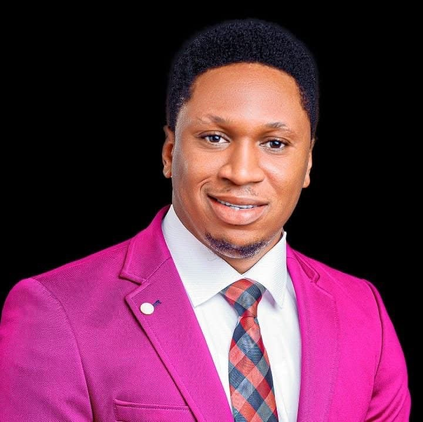

Apostle Ifeanyi Ugochi
Founder & Lead Pastor
Biography
Apostle Ifeanyi Ugochi is the Founder and Lead Pastor of Global Champions Ministries. Since establishing the ministry in 2015, he has dedicated his life to raising believers who walk boldly in faith, purpose, and spiritual excellence. Through dynamic teaching, mentorship, and evangelism, Apostle Ifeanyi has impacted countless lives across communities, helping individuals discover their God-given destiny and develop a deeper relationship with Christ. His passion is to see people transformed by the power of God and equipped to become champions in every sphere of life.